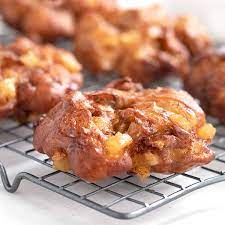

Apple Fritter

INGREDIENTS
Fritter Dough
- 1 1/2 cup Flour
- 1/4 cup Sugar
- 2 tsp Baking powder
- 1/2 tsp Salt
- 1 tsp Cinnamon
- 1/3 cup Milk
- 2 Eggs
- 3 tbps Applesauce
- 2 Apples
- Canola oil for frying
Glaze
- 2 cups Powdered sugar
- 1/4 cup Milk
- Vanilla extract to taste
INSTRUCTIONS
- Whisk together flour, sugar, baking powder, salt, and cinnamon in medium bowl.
Make a well in the center and add 1/3 cup milk, eggs and applesauce.
Stir just to combine. Fold in apples.
- Heat 1 1/2 inches of oil in heavy skillet, dutch oven or deep fryer to 375 degrees.
Drop about 1/4 cup of batter per fritter into hot oil; spreading it out as you drop.
Cook each side until golden brown; approximately 2 minutes per side.
Use a slotted spoon to remove to paper towels to drain.
- Whisk together 1/4 cup milk, powdered sugar and vanilla.
Dunk each fritters in the glaze turning over to make sure both sides coated.
Place on wire racks to air dry and drip.